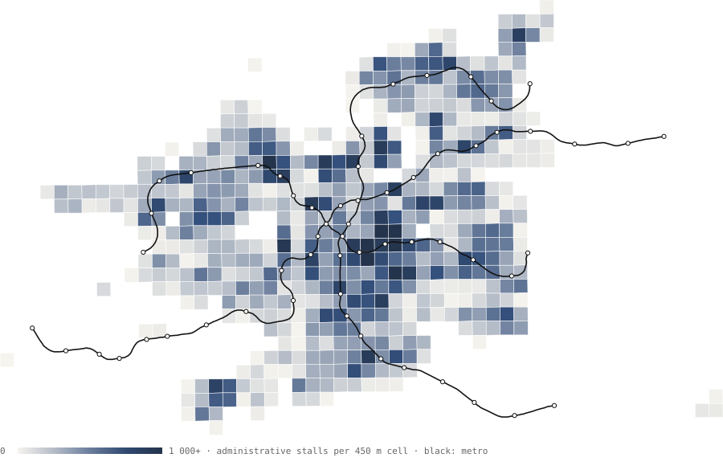

Research · Prague, measured · Part 5 · paid kerb and car length, 2012–2025
Longer cars and Prague's paid kerb
Today's paid kerb in Prague would hold about 1.6 % more cars if they were 2012's cars, and new Czech cars grew less over 2022–2025 than T&E's series implies (supported).
- more cars today's kerb would hold with 2012's cars
- 1.6 % 1.3–1.9 % · range under the registered inputs
- a new car in Czechia, 2022 → 2025
- +2.3 cm 95 % CI −0.3 to +5.2 · bootstrap by model line
- stalls in the paid zones, 28 September 2026
- 168 424 administrative count
- a long car's advantage under the flat permit
- ~120 Kč a year · 90th vs 10th length percentile · no interval
Overwhelmed? Here's the short version
- The estimate treats every parallel bay as unmarked, so it is an upper bound.
- Almost all of the uncertainty comes from the lengths of cars made before 2010.
- The other registered test was inconclusive (underpowered).
- The first-car permit costs far less than the city's own second-car price; these are policy prices, not rents.
- It does not show how many stalls Prague had in 2012, or how drivers would respond to a different price.
Photo: ŠJů · CC BY-SA 3.0, colour held

The question
Cars sold in Europe have been getting longer and wider, a change Transport & Environment (T&E) has measured for the hundred best-selling models in the EU1. Where cars park end to end, a longer car leaves less room for the next one. This study asks how much more of Prague's paid kerb today's cars take than 2012's cars would, and what the flat resident permit charges for the difference. Parking economics has long treated the kerb as underpriced land whose price, more than its supply, rations its use2345, and T&E's projection that European cities lose 8.5 to 14 % of parallel parking by 2040 has brought the size of cars into the same argument1.
Three earlier texts on this site answered the question with numbers they could not check678: the growth of new cars from T&E's European series, the share of parallel parking from Berlin, and a length series converted from EEA wheelbases. This study replaces them. It reads the length of every car in the Czech vehicle register and the geometry of every segment of Prague's paid zones, under an analysis plan committed before any length was read.
Data
The size of the cars comes from the Ministry of Transport's register, which lists the vehicles registered in Czechia, including those since scrapped or exported, with their overall length9. The export of 1 September 2026 has 19.4 million rows. Passenger cars and their off-road variant (M1 and M1G) number 13.4 million, of which 6.9 million are in operation. Length is recorded for at least 99.6 % of cars made since 2012, but for fewer than half of those made before 1990. New cars in each year are weighted to the EEA's registration counts model line by model line, so that cars since scrapped or exported count as they did when they were sold10. The EEA files carry wheelbase but not length, and no dimensions at all for Czech cars after 2022; how they were cleaned is set out in the design file11 and the archived wheelbase text7.
The kerb comes from the city's layer of paid parking zones on its ArcGIS server, where each segment has an area in real square metres12. The server works in S-JTSK, so nothing is reprojected, whereas the copy on ArcGIS Online is in Web Mercator and overstates every area by a factor of 2.43 at Prague's latitude. On 28 September 2026 the layer had 16 874 segments holding 168 424 stalls, 1.4 % above the count that TSK, the city's road authority, published for December 202413, which is the expected direction since capacity has been added since then. These are administrative stalls, a count the city assigns to each segment.
Whether a segment is parallel or perpendicular can be read from its shape, since a band 2 to 2.5 m wide suggests cars along the kerb and one 4.5 to 5.5 m wide cars across it. This study reads the band width of each segment from its area and perimeter. Checked against 1 706 segments that the city had labelled in 2019, all in Prague 4, 5, 6 and 9, the rule classifies 97 % of stalls correctly. Applied to today's layer, it puts 59 % of stalls on parallel kerb, where the earlier texts had borrowed 68 % from Berlin1.

How this was done
The analysis plan was written and committed to the site's public repository before any car length from the register was read11. When the plan was registered, the author had already seen the results of the three earlier texts, the zone layer, the EEA series and counts of the register's coverage, but no length from the register. The code was then frozen and run once on lengths scrambled across years within each make, and only after that on the real ones. The plan fixes two tests, which share a 5 % family-wise error rate through Holm's procedure14, and three estimates that are reported rather than tested, each with bands and a reporting sentence for each band written in advance. It also fixes the inputs and their ranges.
On a kerb where cars park end to end, capacity is the length of kerb divided by the pitch, the car's length \(L\) plus the gap \(g\) between cars. Width does not enter, because a wider car takes its extra width from the driving lane and not from the cars in front and behind. The city publishes no kerb length, so the model holds today's kerb fixed and anchors on today's count: the stalls a past fleet would fill equal today's stalls times the ratio of the two pitches,
where the gap of 0.82 m is the difference between T&E's end-to-end pitch of 5.20 m, from Berlin traffic data, and its average car of 4.38 m1. The model therefore asks how many of 2012's cars today's kerb would take, and it has no count of the stalls Prague had in 2012.
New lengths reach the parked fleet slowly, because the average car in the Czech fleet is almost seventeen years old15. The fleet is modelled from the register. Every car entering in each year, at the age it entered (new, or imported used), survives to 2012 and to 2025 on a curve calibrated to the fleet's mean age in each year, 16.7 years in 2025, which is published, and an assumed 13.3–14.1 years in 2012, which is not. The intervals of the three estimates are the 2.5–97.5 % range over draws from the registered input distributions, so they describe uncertainty in the inputs and are not sampling intervals. The tests use a studentised bootstrap clustered by model line.
The tests
| Hypothesis | Test | Result |
|---|---|---|
| H2a · the register agrees with the wheelbase estimate on how much new cars grew, 2012–2022 | equivalence within ±4.4 cm16 | inconclusive (underpowered) +2.3 cm apart, p = 0.29 |
| H2b · new cars grew less in 2022–2025 than T&E's series implies (+6.0 cm) | one-sided | supported +2.3 cm, p = 0.007 |
p-values: studentised cluster bootstrap over 796 model lines, 9 999 draws. Holm thresholds 0.025 and 0.05; only H2b passes. The ±4.4 cm margin is the change in new-car growth that would move the per-parallel-space estimate by a quarter of a percentage point, fixed from constants before the data were read.
New cars in the register, 2012–2025
Measured from the register and weighted to the EEA's counts, the average new car in Czechia grew by 12.7 cm per decade over 2012–2022. H2a compares that with the route the earlier wheelbase text took, which turned the EEA's wheelbase series into length7. With the off-road variant included and wheelbase converted at the register's own ratio within each model line, 1.47 mm of length per mm of wheelbase, that route gives 10.4 cm, while the published European ratio of 0.61817 would turn the same wheelbase into 13.0 cm. The register and the wheelbase route differ by 2.3 cm, and the test cannot say whether that counts as agreement, because the 90 % CI runs from −4.3 to +9.2 cm, far wider than the margin. The plan's power check, run before any length was read, had put the chance of showing agreement at 16 %, and the realised standard error was 3.9 cm against the 2.4 cm planned, so the real power was lower still. The result is inconclusive (underpowered) and does not indicate that the two routes disagree.

For 2022 to 2025, the years for which the EEA publishes no dimensions, the register gives a firmer result. New cars grew by 2.3 cm over those three years (95 % CI −0.3 to +5.2, bootstrap by model line), against the 6.0 cm that T&E's European series implies1, and the registered test against 6.0 passes (p = 0.007). The plan's other question, whether the Czech market kept the wheelbase estimate's pace of about 3 cm, cannot be answered from these data, since the interval covers both 3 and the midpoint of 4.5. T&E's figures are rounded to the centimetre, which moves a three-year difference by up to about 0.7 cm.

What today's kerb would hold with 2012's cars
On the fleet model the average car in the fleet grew from 4.23 m in 2012 to 4.37 m in 2025. On a parallel kerb, where capacity is kerb length divided by car length plus gap, the estimates are these:
| Estimate | Median | Range under the registered inputs (2.5–97.5 %) |
|---|---|---|
| θ₁ · all stalls, parallel bays unmarked | 1.6 % | 1.3 – 1.9 % |
| θ₁ᵘ · per space on parallel kerb | 2.7 % | 2.2 – 3.2 % |
| stalls, on 168 424 administrative stalls | about 2 800 | 2 200 – 3 300 |
| θ₁ if a quarter / half of parallel bays are painted | 1.3 / 1.0 % | 1.1 – 1.6 / 0.9 – 1.2 % |
The whole range for all stalls sits in one of the bands fixed in advance, and the plan's sentence for that band reads: on today's kerb, 2012's cars would fit between one and two and a half more cars in every hundred: real, and small next to the count of cars. Its second half was written for the comparison with the number of cars, which this study could not make (see below), so only the first half is reported as a finding.
The per-parallel-space estimate, 2.2–3.2 %, straddles two bands, and for that case the plan says to give both sentences and the input that decides between them: on today's kerb, 2012's cars would fit between one and two and a half, or between two and a half and five, more cars in every hundred parallel spaces. Which of the two holds depends above all on how long the cars made before 2010 really were (fig. 5).

The earlier estimates reached about the same share with a shorter fleet growth and a larger borrowed parallel share, which offset each other. Per parallel space, 2.7 % over thirteen years is far below T&E's headline pro-rated to the same span (7.4–12.1 %)1 and close to what T&E's own parameters imply (2.9–3.4 %). The headline itself could not be reproduced from those parameters, which give 3.4 to 4.0 % by 2040, so it is cited here as T&E's modelling and not used as a check.
Where bays are painted, a longer car does not cost a bay unless it no longer fits in one. The share of cars longer than 5.25 m, half a metre short of a painted parallel bay, rose from 0.3 % to 1.1 %. Which of Prague's bays are painted is not in the open data, so the estimate treats every parallel bay as unmarked, which makes it an upper bound, and the painted scenarios show how far it would fall.
Car width and perpendicular parking
This section is descriptive and outside the registered plan. During the 2026 campaign a candidate in Praha 3 proposed switching streets from parallel to perpendicular parking18, and the two layouts ration different dimensions of the car. A parallel car uses its length plus the gap, about 5.2 m of kerb for the register's average parked car of 4.37 m. A perpendicular car uses the width of its stall, 2.50 m in the Czech standard ČSN 73 6056, whose tables are quoted here from secondary sources1920. Per metre of kerb, perpendicular parking holds about twice as many cars, but its stall is 5.00 m deep against the 2.00 m width of a parallel one, so the switch turns three metres of street width, taken from the pavement or the driving lane, into stalls, before counting the wider lane a car needs to turn in. The widths of the streets in Praha 3 were not measured, so this study cannot say how many streets have those three metres to spare. The layout also changes which kind of growth matters. On a parallel kerb a wider car takes its extra width from the lane, while in a perpendicular stall width is the binding dimension, and a new car's body, about 1.82 m wide in T&E's EU series1, leaves about 68 cm between neighbours in a 2.50 m stall.
The resident permit and the city's own tariffs
A resident's permit for a first car costs 1 200 Kč a year in the main areas, 600 Kč in the outer sub-areas of Praha 5, 8, 9, 10 and 18, and 360 Kč for residents over 65. A second car costs 7 000 Kč, and since 2026 zero-emission cars pay half21. At 13.5 m² of net zone area per stall, the main-area price comes to 89 Kč per square metre a year (44 Kč in the outer sub-areas), whether the car is a Fabia or a Kodiaq, so the price rations neither the number of cars nor their size.
Because the first car pays the same whatever its length, the price per metre of kerb falls as the car gets longer. In the national fleet on the road (Prague's own fleet cannot be identified in the open data), a short car at the tenth percentile of length, 3.96 m, pays about 250 Kč per metre of kerb a year, and a long one at the ninetieth, 4.84 m, about 210. A permit priced by length, with today's average kept, would run from about 1 140 Kč for the short car to about 1 260 for the long one, about 120 Kč a year apart, and would change the price by more than a tenth for 2 % of cars.
The level of the price is a separate quantity. A permit entitles its holder to search for a space rather than to a particular bay, and the search has its own cost22. The plan brackets the level against the city's own tariffs and never states it as one number. The first-car permit is 5 800 Kč a year below the city's price for a second car and 48 000 Kč below its fee for reserving a permanent bay, 10 Kč per m² a day23, which pays for exclusive round-the-clock use and so marks an upper end. Both are policy prices, not market rents. The two middle points the plan named, land value at a 4 % return and garage rents, had no dated source fixed in advance and are not shown. At every price level the gap between a long and a short car is about a tenth of the price of the space itself (fig. 4).

| City | Who pays | Rule |
|---|---|---|
| Koblenz, from March 202424 | residents | length × width × 23.40 € a year, at least 100 € |
| Cologne, from March 202525 | residents | 100 € up to 4 109 mm, 110 € to 4 709 mm, 120 € above |
| Freiburg, 2022–202326 | residents | 240 / 360 / 480 € by length; annulled by the Federal Administrative Court in June 2023, partly because the steps between length classes were too large |
| Prague | residents | 1 200 Kč a year for a first car in the main areas, whatever its size |
Resident permits priced by car size elsewhere. Weight-based schemes (Lyon, Tübingen) and footprint schemes (Aachen, Bonn) could not be verified in primary sources and are left out, as the plan required. Prices are shown in their own currency.
The number of cars against their size
The plan's third estimate compares, in the districts whose zones barely changed since 2012 (Prague 1, 2, 3 and 7), how much more kerb the growing number of cars claims with how much more their length claims. It needs the number of valid permits at each year's end, a series that is not public. The only public figure is 215 108 valid permits on 1 May 2026, from TSK's answer 2026-05-19-058 to an information request27. The series is still to be requested from TSK and the estimate was not run, so this study makes no statement about how the loss to longer cars compares with the growth in their number.
Robustness
For every input, the plan asked how far it would have to move to change the band. No single input can do so within its registered range, and the one that could, the parallel share, would have to reach 93 % or more, against the 58–60 % measured.
| Input (others central) | Registered range | θ₁ at the two ends |
|---|---|---|
| lengths of cars made before 2010 | bracket of up to ±10 cm for the oldest cars | 1.30 – 1.92 % |
| reference pitch | 4.9 – 5.5 m | 1.52 – 1.71 % |
| mean fleet age in 2012 | 13.3 – 14.1 years | 1.57 – 1.64 % |
| definition of age | ±0.5 year | 1.59 – 1.63 % |
| shape of the survival curve | k 1.4 – 1.6 | 1.60 – 1.61 % |
| gap proportional to length, per parallel space (θ₁ᵘ, 2.7 % with a fixed gap) | registered input distributions | 3.2 % (2.6 – 3.8 %) |

Almost all of the uncertainty (a first-order share of 0.92 in a variance decomposition28) comes from how long the cars made before 2010 really were. The register records them only as survivors, many of the rest were scrapped before its history begins, and the plan brackets that ignorance with a symmetric allowance of up to ±10 cm for the oldest cars. The survival curve's shape is narrowly constrained, since, fitted to the fleet's published mean age, it reproduces the published fleet counts for 2016–2019 to within 5 % only for one narrow range of shapes (within 3 % at the shape used), and that range was fixed before any length was read.
One calibration check that the plan wrote down failed. The modelled fleet of 2025 is 3.9 cm shorter than the fleet the register shows in operation, and the registered remedy, choosing the curve's shape to close the gap, could not close it, because the gap is smallest at the edge of the allowed range. The shape was fixed at that edge (k = 1.5), and with the shape drawn across its range the estimates are the same to four decimals.
What changed after registration
The design file lists every change with its date11. On 29 September 2026, before any unscrambled length was read (freeze commit e589225):
- The blind dry run scrambled lengths across years within each make, as registered, since scrambling within each year would have kept, and so revealed, the trend being tested.
- The model-line dictionary was frozen. Between 97.3 and 100 % of each year's EEA registrations matched a register model line; the line key merges a few families, such as Hyundai's i-models.
- Implementation shortcuts were fixed in the frozen code: a normal approximation for the imputation variance, an inner bootstrap of 50 draws, a reduced size check (200 simulations), and values that overflowed the extract set to missing.
On 29 September 2026, after the real run:
- The painted-bay share counted cars with no recorded length as long. The error was found because it gave an impossible negative loss, and it was fixed; the headline estimates did not change beyond the fourth decimal.
- The fleet calibration check failed by 3.9 cm and its remedy could not close the gap. The code that fixed the shape at k = 1.5 was written after the real run.
- H2a was less precise than planned (standard error 3.9 cm against 2.4), and the size check at the upper margin rejected at 0.11 instead of 0.05.
- The variance decomposition gave two small negative shares (−0.015 and −0.001), which are estimator noise and read as zero.
- The reserved-bay fee of 10 Kč per m² a day applies in the zone districts; Prague 13 charges 5 Kč and some outer districts 1 Kč.
- The size component was defined as the gap between the 90th and 10th percentile of a revenue-neutral length price, on the national fleet, because Prague's fleet cannot be identified in the open data.
- Not done: painted bays were not measured, and no 2026 orthophoto sample was labelled, so the parallel share rests on the 2019 labels for Prague 4, 5, 6 and 9 only; two points of the price bracket were not computed; the other cities' prices were not converted to one unit; the count-against-size estimate and its fallback on registrations were not run.
- With the off-road variant included, the wheelbase route's figures changed, and the archived wheelbase text carries the correction7.
What this means
The central quantity is θ₁: on the model, today's paid kerb would hold about 1.6 % more cars (1.3–1.9 %, range under the registered inputs) if they were 2012's cars, or about 2 800 administrative stalls (2 200–3 300). The register's lengths and the zone segments are measured; the fleets of 2012 and 2025 are modelled and the parallel share is read from segment shape, so the range reflects those inputs, mainly the lengths of cars made before 2010, not sampling error. With every parallel bay counted as unmarked, 1.6 % is an upper bound, falling to 1.3 % or 1.0 % if a quarter or half are painted. The registered test supports that cars new to Czechia grew less over 2022–2025 than T&E's European series implies: 2.3 cm (95 % CI −0.3 to +5.2) against 6.0 cm. On the national fleet, a length-priced permit at today's average would put about 120 Kč a year between a long and a short car. The price level is bracketed only by the city's own tariffs, which are policy prices, not market rents. How the loss compares with the growth in the number of cars is not known.
What this does not show
These are counterfactuals on today's kerb, and nothing here counts the stalls Prague had in 2012. The register describes the cars registered in Czechia, while the mix parked in Prague's zones is not published, and Prague's fleet is probably younger than the national one. The 2012 fleet is modelled, and the lengths of its oldest cars are assumed, with a bracket on both sides. The modelled fleet of 2025 falls 3.9 cm short of the measured one; a shortfall common to 2012 and 2025 would hardly move the loss, but one that differs between the years would, and nothing here can rule that out. Stalls are the city's administrative count, and a permit records an entitlement to park, which says nothing about whether the car is there. The section on perpendicular parking rests on T&E's European widths and on dimensions of ČSN 73 6056 taken from secondary sources, because the standard itself was not opened. The price comparison uses the city's own tariffs, which are policy prices and not market rents. This study does not compare the loss with the growth in the number of cars, and it says nothing about how drivers would respond to a different price.
Reproduction
The analysis runs from tools/parking6/ in the site's repository with uv and Python, and each script's first lines give its command; the estimates are rebuilt with uv run --no-project --with numpy --with pandas --with pyarrow --with pyproj python tools/parking6/parking6_estimate.py. The raw files are not in the repository; they are listed with their SHA-256 hashes in docs/research/prague-parking-files.sha256. The register export of 1 September 2026 (19 383 927 rows) was downloaded from the ministry's open-data site9, which replaces the file as the register changes, so a later download will not match the hash. Two steps import the code of the earlier texts from a separate local repository. The order is:
rsv_coverage.py, coverage counts of the export, with no length kept;rsv_extract.py, a compact extract of technical fields, with no VIN or owner data;parking6_design.py all, the design-stage checks, the zone-layer snapshot and the band-width rule;eea_m1g.pyandeea_counts_2325.py, the EEA wheelbase series and the 2023–2025 counts;parking6_dict.py, the model-line dictionary;part2_m1g.py, the wheelbase-route comparator;parking6_estimate.py, the tests and estimates, written toassets/parking6/h2.json,e1.jsonande4.json;figures.py, the static figures.
References
- Transport & Environment (2026). Ever-bigger? Car size at a crossroads, p. 26. T&E report. uploads.transportenvironment.org/…/2026_06_TE_Ever_Bigger_report_final.pdf. Accessed 14 September 2026. Dimension series for the 100 best-selling EU models, width without mirrors; 5.20 m end-to-end pitch (Berlin Traffic Information Centre, 2025); 68 % parallel share (Berlin); 8.5–14 % loss projection to 2040.
- Shoup, D. (2005, updated 2011). The High Cost of Free Parking. APA Planners Press.
- Shoup, D. (1997). The high cost of free parking. Journal of Planning Education and Research 17(1), 3–20.
- Pierce, G., Shoup, D. (2013). Getting the prices right: an evaluation of pricing parking by demand in San Francisco. Journal of the American Planning Association 79(1), 67–81.
- Inci, E. (2015). A review of the economics of parking. Economics of Transportation 4(1–2), 50–63.
- Šandová, B. (2026). How many parking spaces Prague lost to bigger cars (Text 01), 8 September 2026. bsandova.com; replaced by this article. Last version in the repository.
- Šandová, B. (2026). Parking II: the fleet, measured (Text 02), 15 September 2026, with the correction of 29 September 2026. bsandova.com; replaced by this article. Last version in the repository.
- Šandová, B. (2026). Parking III: count, not size (Text 03), 23 September 2026, with corrections of 28 and 29 September 2026. bsandova.com; replaced by this article. Last version in the repository.
- Ministerstvo dopravy (2026). Registr silničních vozidel, open data: Vozidla – technické údaje. download.dataovozidlech.cz. Export of 1 September 2026 (19 383 927 rows).
- European Environment Agency (2026). Monitoring of CO2 emissions from passenger cars, Regulation (EU) 2019/631. Discodata. discodata.eea.europa.eu. CZ, M1 and M1G: final files 2010–2022, accessed 14 September 2026; counts 2023–2025 (2025 provisional), accessed 29 September 2026.
- Šandová, B. (2026). Prague's kerb, measured: research design, v2, with dated changes after registration. bsandova.com repository. docs/research/prague-parking-design.md. Design-stage checks, code freeze and file hashes in the same folder.
- Hlavní město Praha (2026). Zóny placeného stání, úseky. ArcGIS Server. gs-pub.praha.eu/…/zony_placeneho_stani/MapServer/3. Snapshot of 28 September 2026, S-JTSK (EPSG 5514); 2019 labelled segments (TYPSTANI) from the city's ZPS map data.
- TSK Praha (2025). Počty parkovacích míst v Praze, state of December 2024: 101 908 resident, 63 117 mixed, 1 155 visitor stalls. data.praha.eu. data.praha.eu/praha-v-cislech/pocty-parkovacich-mist-v-praze. Accessed 14 September 2026.
- Holm, S. (1979). A simple sequentially rejective multiple test procedure. Scandinavian Journal of Statistics 6(2), 65–70.
- ČAPPO (2025). Stav vozového parku v ČR (SDA data), 2016–2025. cappo.cz/cisla-a-fakta/stav-vozoveho-parku-v-cr. Accessed 14 September 2026. Mean age of passenger cars 16.68 years in 2025; the distribution by model year is not published.
- Schuirmann, D. J. (1987). A comparison of the two one-sided tests procedure and the power approach for assessing the equivalence of average bioavailability. Journal of Pharmacokinetics and Biopharmaceutics 15(6), 657–680.
- Holder, D. et al. (2021). Systematic analysis of changing vehicle exterior dimensions. Proceedings of the Design Society 1 (ICED21). doi.org/10.1017/pds.2021.553. Wheelbase/length 0.618, R² 0.75.
- Vodrážka, P. (2026). Populistické výkřiky parkování v Praze nevyřeší. Čtyři kroky ale mohou situaci skutečně zlepšit. Deník N, 22 September 2026 (paywalled). Source for the perpendicular-parking proposal in Praha 3.
- ÚNMZ (2011). ČSN 73 6056, Odstavné a parkovací plochy silničních vozidel, March 2011. The standard is paywalled and its tables were not opened; stall dimensions (parallel 2.00 × 5.75 m, perpendicular 2.50 × 5.00 m) are taken from secondary sources, chiefly [20], which disagree on the parallel stall length (5.50–6.75 m by source and variant). The length model does not depend on them.
- Závadská, A. (2020). Optimalizace návrhových prvků ČSN 73 6056. VUT Brno. dspace.vut.cz. Accessed 14 September 2026.
- TSK Praha (2025). Výtah z ceníků parkovacích oprávnění, permit prices by area and user, valid 2026. cdn.parking.praha.eu. Accessed 28 September 2026.
- van Ommeren, J., Wentink, D., Rietveld, P. (2012). Empirical evidence on cruising for parking. Transportation Research Part A 46(1), 123–130.
- Hlavní město Praha (2025). Obecně závazná vyhláška č. 16/2025, o místním poplatku za užívání veřejného prostranství, § 2(1)(k) and Annex 1.
- Stadt Koblenz (2024). Erläuterung Bewohnerparkgebühren 2024. koblenz.de. Accessed 28 September 2026.
- Stadt Köln (2025). Ab 1. März 2025 gilt die neue Bewohnerparkgebührenordnung. stadt-koeln.de. Accessed 28 September 2026.
- Bundesverwaltungsgericht (2023). Urteil 9 CN 2.22, 13 June 2023. bverwg.de/130623U9CN2.22.0. Accessed 29 September 2026.
- TSK Praha (2026). Answer 2026-05-19-058 of 19 May 2026 to an information request under Act 106/1999: 215 108 valid permits on 1 May 2026. Poskytnuté informace. tsk-praha.cz. Accessed 28 September 2026.
- Saltelli, A. et al. (2008). Global Sensitivity Analysis: The Primer. Wiley.
Change log
- 29 September 2026, before version 2: Texts 02 and 03 merged into this article. With the off-road variant included in the wheelbase route, the comparison with Deník N's Praha 7 figure changed from 174 stalls a year (153–208), about eight years of Praha 7's permit growth, to 208 (183–250), about ten; and the 89 Kč per m² was stated as the main-area price for a first car, with the other areas and users added.
- 29 September 2026: version 2. Retitled "Longer cars and Prague's paid kerb" (was "Bigger cars, the same kerb"), and renumbered as Part 5, following the series' publication order. Shortened from about 5 800 to about 3 500 words of body text. Removed as superseded, and kept in the archived texts: the eight figures carried over from the first estimate and the wheelbase route (area against length model, wheelbase and length series, best-selling models, fleet lag, width against the stall, gap sensitivity, districts, and stall loss against Praha 7's permits), the area-model and first-estimate stall counts, the history of the wheelbase route, the EEA cleaning details, the Škoda market-composition paragraph, the first estimate's test inventory, and the Fabia and Kodiaq example with PAQ Research's 6 000 Kč threshold. The comparison of the size effect with Praha 7's permit growth removed, because it set a city-wide modelled loss against one district's reported permits; the band sentence's second half is no longer reported as a finding. The width and perpendicular-parking sections merged into one descriptive section on the registered fleet (5.2 m of kerb, not 5.0 m from the earlier fleet model); the mirror-width claim dropped. "Implicit subsidy (forgone rent)" renamed the gap to the city's own tariffs, also in the legend of fig. 4. Intervals labelled by type; the deck leads with the estimate. The Paris row and the Cologne 1 mm aside dropped from the table of other cities. Metadata block, registration wording, disclosure of what was seen before registration, Robustness table and Reproduction section added; references renumbered by first citation, reduced to one work each, and given access dates; the drivesize.com, SAE J1100, electrive, iROZHLAS, T&E press-release and Škoda references dropped with the claims resting on them. Number changes: the stall base in the estimates table is given as 168 424 (the layer's count) instead of the rounded 168 400; "has been requested from TSK" corrected to "is still to be requested", as in the design file.
- Checked against editorial standard v1 on 29 September 2026.
- 29 September 2026: added the section What this means. To keep the body within the research cap, four sentences that repeated material elsewhere were removed: the commit times in How this was done (they stand in the registration row of the metadata block), the pointer to the archived texts in The question (they are linked from the references), the pointer to the history of the wheelbase route in New cars in the register (reference 7 is cited in the same paragraph and in Data), and the pointer to the capacity model's earlier checks in Robustness (they remain in the archived first text, reference 6). No number changed.